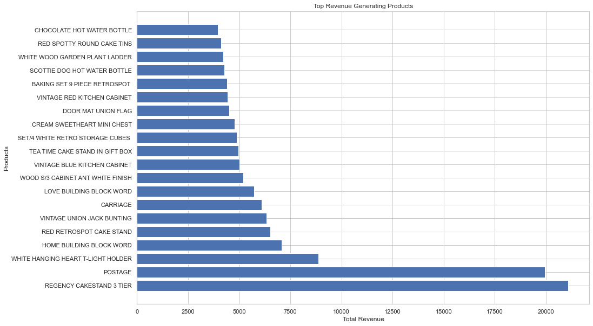

.png)
Yearly Revenue Trends:
In 2019, only one quarter of data is available, and during that period, the accumulated revenue amounted to approximately $ 90,000.
Conversely, in 2010, revenue data is available for all quarters, and it exceeded $1.1 million in total.
Quarterly Revenue Comparisons:
The last quarter of 2019 witnessed revenue just shy of $100,000.
Contrasting this, the first quarter of 2010 experienced significant growth, with revenue more than doubling, surpassing $200,000.
The second quarter of 2010 showed a slight increase from the previous quarter, reaching above $250,000.
The third quarter of 2010 witnessed a modest decline but remained above $250,000.
The last quarter of 2010 marked the highest revenue generated, surging above $350,000.
Monthly Revenue Trends:
Examining the monthly line chart, there is a noticeable oscillation in revenue between $90,000 and $70,000 from January 2010 to August 2010.
However, in November 2010, there was a significant breakout, resulting in revenue soaring to approximately $175,000.
.png)
In the year 2019, approximately 400,000 products were sold, contrasting significantly with the sales volume of over 5 million products in the year 2010.
Breaking down the 2019 data, it is important to note that sales occurred exclusively in a single quarter, during which a total of 400,000 products were sold. In stark contrast, the first quarter of 2010 witnessed substantial sales, with an impressive total of over 1.2 million products sold. The subsequent second quarter exhibited a slight dip in sales, resulting in a shortfall of approximately 100,000 products. However, the third quarter of 2010 demonstrated a remarkable surge in sales, exceeding 1.3 million products. The fourth quarter marked the pinnacle of sales for the year, reaching an impressive 1.4 million products sold.
Analyzing the price dynamics from January to September of 2010, the prices fluctuated within a range slightly below 400,000 units, eventually ascending to the 500,000-unit mark. This trend, however, experienced a significant shift in October when a record-breaking sales figure of 680,000 products was achieved.
On a daily basis, the data revealed fluctuations within a range spanning from the upper 20,000s to the upper 10,000s. Notably, there were discernible spikes on select days, surpassing these thresholds, suggesting instances of exceptionally high sales volumes on those particular days.
.png)
We have identified notable sales figures for various products within our inventory. Specifically:
1. "White Hanging Heart Light Holder" and "World War 2 Gliders ASSTD Designs" have both achieved remarkable sales, surpassing the 50,000 unit mark.
2. "Brocade Ring Purse," "Pack of 72 Retro Spot Cake Cases," and "Assorted Colour Bird Ornament" have also demonstrated strong performance, each exceeding 40,000 units in sales, albeit slightly below the 50,000-unit threshold.
3. "60 Teatime Fairy Cake Cases" and "Pack of 60 Pink Paisley Cake Cases" fall within the range of 30,000 to 40,000 units in terms of sales volume.
4. For the remaining products in our top 20, their sales quantities range between 20,000 and 30,000 units, showcasing a consistent level of demand.

Highest Revenue Generating Products
The following insights emerge:
1. The standout performer in terms of revenue is the "Regency Cake Stand," which has contributed significantly with over $20,000 in revenue.
2. Following closely behind is the "Postage" category, although it falls just short of matching the revenue generated by the "Regency Cake Stand." These two products dominate the revenue generation chart, significantly outperforming the others.
3. "White Hanging Heart Light Holder" demonstrates a respectable performance, generating revenue in excess of $8,000. While it doesn't reach the levels of the top two products, it holds its own in comparison to the rest of the product lineup.
4. All other products individually generate less than $7,500 in revenue. These items, while contributing to overall sales, do not match the substantial revenue generated by the top performers, emphasizing the need for strategic focus and potential opportunities for improvement in these product segments.
.png)
.png)
.png)
.png)
Cluster 1 - The Frugal Shoppers:
This cluster represents the largest portion of our customer dataset.
Customers in this cluster tend to make a high number of purchases or invoices.
However, their individual average sales per transaction are relatively low.
Consequently, the revenue generated from this cluster is notably low, despite their frequent transactions.
Cluster 2 - The Selective Spenders:
The second-largest cluster in our dataset comprises customers falling into this category.
Customers in Cluster 2 exhibit a distinctive pattern of high average sales per transaction.
However, they make relatively few invoices or transactions, resulting in a low number of invoices.
The overall revenue generated from this cluster remains low due to their limited transaction frequency.
Cluster 3 - The High-Yield Investors:
This cluster consists of customers who generate higher average revenue per transaction.
Their average sales are decent and competitive.
However, they tend to make a lower number of invoices compared to other clusters.
.png)
.png)
.png)
Products and Demographics by Cluster
In Cluster 1, we observed a substantial presence of approximately 340,000 customers hailing from the United Kingdom, while Germany, France, Spain, and Switzerland combined accounted for fewer than 25,000 customers. This group of customers predominantly purchased the "White Hanging Heart T-Light Holder," nearing an impressive 50,000 units in sales. Additionally, they demonstrated notable interest in the "Brocade Ring Purse," just a few units shy of reaching the previous item's sales figures. Another popular choice among this cluster was the "Assorted Color Bird Ornament," with sales approaching the 40,000-unit mark.
Cluster 2, on the other hand, comprised a different customer demographic. It consisted of approximately 3,700 customers from the United Kingdom, around 1,700 from the Netherlands, and several hundred from France and Denmark. These customers displayed a strong preference for the "Black and White Paisley Flower Mug," which sold over 25,000 units. Furthermore, they exhibited substantial interest in the "World War 2 Gliders Asstd Designs," with sales exceeding 20,000 units, and the "Pack of 12 Suki Tissue," which saw more than 17,000 units sold.
In Cluster 3, there was a notable presence of around 18,000 customers from the United Kingdom and 8,000 from EIRE, with a smaller representation from Spain, the Netherlands, and Nigeria. This cluster displayed a penchant for items such as the "2 Retro Spot Cake Cases," which witnessed sales of over 4,000 units. Additionally, the "Teatime Fairy Cake Cases" came close to the 4,000-unit mark, while the "72 Sweetheart Fairy Cake Cases" fell just short of 3,000 units in sales.
.png)
Market basket analysis was undertaken specifically for the second cluster, focusing on products that exhibited a substantial degree of lift—a statistical measure indicating the strength of association between items. What emerged from this analysis is a compelling revelation: the purchasing behavior observed within this cluster transcends mere coincidence. It underscores a pattern wherein products are not haphazardly selected but, rather, are systematically chosen by customers, and these selections tend to occur in tandem with a high degree of confidence and support.
Intriguingly, this cluster's shopping preferences unveiled a treasure trove of valuable insights. A notable number of products surfaced as strong candidates for recommendations to customers who frequently purchase items such as "Lunch box I Love London," "Retrospot Cake Stand," "Pack of 72 Retro Cake Stand Case," and "Regency Cake Stand 2 Tier." These products exhibited a propensity to co-occur with many other items in the basket, implying that customers who gravitate towards these choices tend to engage in complementary purchases. This suggests an opportunity to enhance customer experience by suggesting additional items that align with these popular choices, ultimately enriching their shopping journey.
Yearly Revenue Trends:
An examination of yearly revenue trends illuminated the remarkable performance of 2010, with a total revenue exceeding $1.1 million. Quarter by quarter, 2010 displayed consistent growth, culminating in the last quarter, which recorded revenue surging past $350,000.
Monthly Revenue Trends:
Monthly revenue fluctuations throughout 2010 were observed, with a significant spike in November, propelling monthly revenue to approximately $175,000.
Sales Volume Analysis:
Comparing sales volumes in 2010 and 2019, we unveiled a significant contrast, with 2010 witnessing over 5 million products sold. The first quarter of 2010 alone accounted for more than 1.2 million products sold. Product prices fluctuated until October 2010 when a record-breaking sales figure of 680,000 products was reached. Daily data exhibited noticeable spikes, indicative of exceptional sales volumes on specific days.
Product Performance:
Numerous products showcased impressive sales figures, with standouts such as "White Hanging Heart Light Holder" and "World War 2 Gliders ASSTD Designs," each surpassing 50,000 units sold. Other strong performers included "Brocade Ring Purse," "Pack of 72 Retro Spot Cake Cases," and "Assorted Colour Bird Ornament," all exceeding 40,000 units in sales. The top 20 products consistently demonstrated demand, with sales quantities ranging from 20,000 to 30,000 units.
Revenue Insights:
"Regency Cake Stand" emerged as the top revenue generator, contributing over $20,000, closely followed by the "Postage" category. "White Hanging Heart Light Holder" demonstrated commendable performance, generating revenue exceeding $8,000. While other products contributed to overall sales, they couldn't match the substantial revenue generated by the top performers, highlighting areas for potential strategic focus and improvement.
Market Basket Analysis Insights:
Market basket analysis unveiled patterns of products frequently purchased together, offering the opportunity to enhance customer experiences and boost revenue. Notable insights included:
1. Product Combinations: Identifying products frequently bought together, such as "Lunch box I Love London," "Retrospot Cake Stand," "Pack of 72 Retro Cake Stand Case," and "Regency Cake Stand 2 Tier." These products demonstrated a strong tendency to co-occur with several others, opening avenues for strategic product bundling.
2. Enhanced Recommendations: Leveraging market basket analysis, we can refine product recommendations, making them more personalized to customer clusters. This approach holds the potential to increase cross-selling and upselling opportunities.
Customer Clusters:
Three distinctive customer clusters were identified:
1. Cluster 1 - The Frugal Shoppers: Comprising the largest portion of our customer dataset, these customers make frequent but smaller purchases, resulting in lower overall revenue.
2. Cluster 2 - The Selective Spenders: The second-largest cluster is characterized by customers with high average sales per transaction but fewer invoices, leading to a lower transaction frequency and overall revenue.
3. Cluster 3 - The High-Yield Investors: Customers in this cluster generate higher average revenue per transaction, with decent and competitive average sales. However, they make fewer invoices compared to other clusters.
Targeted Marketing:
Tailor marketing strategies to each customer cluster based on their unique behaviors and preferences.
Product Bundling:
Utilize market basket analysis to identify and promote product bundles that tend to be purchased together.
Pricing Optimization:
Continuously monitor and adjust product prices, capitalizing on demand patterns.
Inventory Management:
Ensure top-performing products are well-stocked, and consider expanding product offerings in Cluster 3.
Customer Engagement:
Implement targeted communication and loyalty programs to strengthen relationships with each cluster